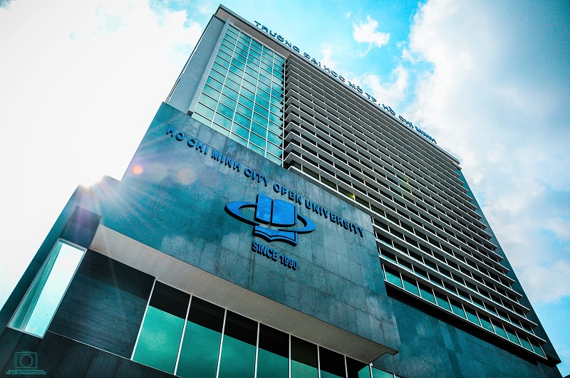

TÀI LIỆU HỌC TẬP
TRANG CHỦ
quá trình thành lập trường
1990-1993
15/06/1990
.jpg)
Ngày 15/6/1990, Bộ trưởng Bộ Giáo dục và Đào tạo ban hành Quyết định số 451/TCCB thành lập
Viện Đào tạo mở rộng trực thuộc Trường Cán bộ quản lý đại học – Trung học chuyên nghiệp và Dạy nghề
26/07/1993

Với sự phát triển nhanh chóng và nhu cầu học tập của xã hội, ngày 26/7/1993 Thủ Tướng Chính phủ quyết định thành lập Đại học Mở bán công TP. Hồ Chí Minh trên cơ sở Viện Đào tạo mở rộng II Thành phố Hồ Chí Minh, với chức năng là đào tạo từ xa, đào tạo tại chỗ, đào tạo tại các điểm vệ tinh, … nhằm đáp ứng nhu cầu học tập đa dạng của xã hội, góp phần tăng cường đội ngũ cán bộ khoa học – kỹ thuật cho đất nước.
THẾ KỈ XXI
22/06/2006

Ngày 22/6/2006, Thủ Tướng Chính phủ ban hành Quyết định số 146/2006/QĐ-TTg chuyển loại hình một số trường đại học và cao đẳng bán công, dân lập. Theo quyết định này, Trường Đại học Mở bán công TP. Hồ Chí Minh được chuyển sang trường đại học công lập và có tên gọi là Trường Đại học Mở TP.
Hồ Chí Minh, là đơn vị sự nghiệp công lập trực thuộc Bộ Giáo dục và Đào tạo, được giao quyền tự chủ, tự chịu trách nhiệm về thực hiện nhiệm vụ, tổ chức bộ máy,
biên chế và tài chính theo Nghị định số 43/2006/NĐ-CP ngày 25/4/2006 của Chính phủ.
24/10/2014

Theo Đề án đã được Thủ tướng Chính phủ phê duyệt, Trường Đại học Mở TP. Hồ Chí Minh được thực hiện tự chủ, tự chịu trách nhiệm về các nội dung:
1. Về việc thực hiện nhiệm vụ đào tạo và nghiên cứu khoa học.
2. Về tổ chức bộ máy, nhân sự.
3. Về tài chính.
4. Về chính sách học bổng, học phí.
5. Về đầu tư, mua sắm.
6. Về cơ chế giám sát.
7. Các quyền và nghĩa vụ khác theo quy định tại Nghị quyết số 77/NQ-CP ngày 24/10/2014 của Chính phủ về thí điểm đổi mới cơ chế hoạt động đối với các cơ sở giáo dục đại học công lập giai đoạn 2014 – 2017 và các văn bản khác có liên quan.
12/06/2015

Ngày 12/6/2015 Thủ tướng Chính phủ ban hành Quyết định số 850/QĐ-TTg phê duyệt Đề án thí điểm đổi mới cơ chế hoạt động của
Trường Đại học Mở TP. Hồ Chí Minh giai đoạn 2015 – 2017.
Được thành lập vào năm 1990 và trở thành trường đại học công lập từ năm 2006. Đến nay, Trường Đại học Mở Thành phố Hồ Chí Minh luôn là lá cờ đầu trong lĩnh vực đào tạo từ xa khu vực phía Nam và là một trong những trường đại học tiên phong tại Việt Nam triển khai phương thức đào tạo trực tuyến.
Gần 3 thập kỷ qua, Nhà trường không ngừng cải cách và nâng cao chất lượng đào tạo bằng việc chủ động mở rộng mối quan hệ hợp tác với nhiều đối tác chất lượng trên thế giới. Trường Đại học Mở Thành phố Hồ Chí Minh hợp tác với nhiều Trường và tổ chức giáo dục danh tiếng như:
- Hội đồng Quốc tế về Đào tạo theo phương thức Mở và hình thức từ xa (ICDE)
- Hiệp hội các Trường Đại học Mở Châu Á (AAOU)
- Trung tâm đào tạo Mở khu vực trực thuộc Hội đồng Bộ trưởng Bộ Giáo dục các quốc gia Đông Nam Á (SEAMEO SEAMOLEC, Indonesia)
- Trường HAMK University of Applied Science (Phần Lan)
- Hệ thống Đại học ASEAN (The ASEAN University Network) (AUN) Thái Lan.
Có người bảo cái tên “Mở” bắt nguồn từ lịch sử hình thành trường. Lúc đó, khi chỉ mới có các trường truyền thống “công lập” thì ngành Giáo dục quyết định thử nghiệm xây dựng trường đại học đào tạo mở, tự hạch toán.
Có sinh viên chia sẻ: “Mở” là do trường đào tạo đa ngành nghề và có tính chất “mở” đối với hoạt động sinh viên cũng như liên kết quốc tế.
Có người lại nói rằng Đại học Mở TPHCM là lá cờ tiên phong trong lĩnh vực đào tạo từ xa, là một trong những trường đại học đầu tiên tại Việt Nam triển khai chương trình đào tạo trực tuyến. Vì vậy, nó có tên là “Mở”. “MỞ" ý là không gian học tập được rộng mở, bạn có thể theo học chương trình của trường bất kỳ ở đâu, bất kỳ lúc nào.
Gần 3 thập kỷ qua, Nhà trường không ngừng cải cách và nâng cao chất lượng đào tạo bằng việc chủ động mở rộng mối quan hệ hợp tác với nhiều đối tác chất lượng trên thế giới. Trường Đại học Mở Thành phố Hồ Chí Minh hợp tác với nhiều Trường và tổ chức giáo dục danh tiếng như:
- Hội đồng Quốc tế về Đào tạo theo phương thức Mở và hình thức từ xa (ICDE)
- Hiệp hội các Trường Đại học Mở Châu Á (AAOU)
- Trung tâm đào tạo Mở khu vực trực thuộc Hội đồng Bộ trưởng Bộ Giáo dục các quốc gia Đông Nam Á (SEAMEO SEAMOLEC, Indonesia)
- Trường HAMK University of Applied Science (Phần Lan)
- Hệ thống Đại học ASEAN (The ASEAN University Network) (AUN) Thái Lan.
Có người bảo cái tên “Mở” bắt nguồn từ lịch sử hình thành trường. Lúc đó, khi chỉ mới có các trường truyền thống “công lập” thì ngành Giáo dục quyết định thử nghiệm xây dựng trường đại học đào tạo mở, tự hạch toán.
Có sinh viên chia sẻ: “Mở” là do trường đào tạo đa ngành nghề và có tính chất “mở” đối với hoạt động sinh viên cũng như liên kết quốc tế.
Có người lại nói rằng Đại học Mở TPHCM là lá cờ tiên phong trong lĩnh vực đào tạo từ xa, là một trong những trường đại học đầu tiên tại Việt Nam triển khai chương trình đào tạo trực tuyến. Vì vậy, nó có tên là “Mở”. “MỞ" ý là không gian học tập được rộng mở, bạn có thể theo học chương trình của trường bất kỳ ở đâu, bất kỳ lúc nào.
Hình thức đào tạo:
Khoa Đào tạo sau đại học tổ chức hai loại hình đào tạo (hình thức không tập trung):
- Chương trình trong nước
- Chương trình liên kết với đại học nước ngoài